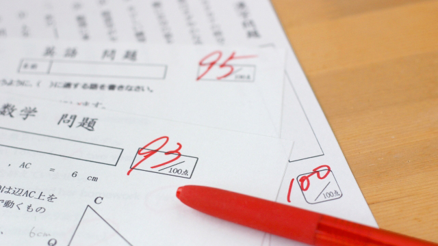

40年近く「教育」の仕事に携わってきて感じること。それは親の悩み、相談はまったく変わらないことです。一言でいうならこうなります。子どもがなかなか勉強しないが、どうすればもっと勉強するようになるのか！？
世代は変わっても親の悩みは変わらない。
勉強させたい親VS勉強しない我が子という対立図はずっと続いている。ということは今の親も親から「勉強しなくて困る」と言われていたはずで、子どもというものは勉強に関して代々親を悩ませているということです。
だから親の皆さんは、我が子が勉強しないという悩みは日本中の子をもつ親の共通の悩みであり代々受け継がれてきた（？）悩みなのだということをまず認識してほしいと思います。自分の子だけが特別ではないということです。
どうでしょう。少し安心しましたか（笑）
さてその上で親の皆さんに考えていただきたいのは「そもそもなぜ子どもに勉強させたいのか」という点です。
「そりゃ一定の学力は人間として必要でしょう」
「小中学校の基礎くらいはきちんとしてないと社会に出て困るからだ」
私が聞きたいのはそういう建前の話や一般論ではなく、親としてのあなたの本音というか感情の部分です。どうして我が子に勉強してもらいたいのか。我が子が良い成績をとれば嬉しく、悪い成績ならイヤな感じがするのはどうしてなのか。
改めて「どうしてか」と詰め寄られても返答に困るかも知れませんね。それくらい「勉強することは当たり前（善）」が前提になっているからです。
ハッキリ言えば、多くの親は子どもの将来のために教育を投資と考えていて、良い成績をとって良い学校に入ることが有利な条件になると思っている。要するに学歴獲得のためです。
学歴獲得は子どもの将来の幸福への絶対条件とまではいわないにしても、有利な条件の1つにはなるだろう。そう思っているわけです。
子どもが勉強しないとイヤな気持ちになるのも子どもが不利益を被ることへの不安のあらわれであり、競争原理から生じる脱落への怖れがあるからです。
ただ困るのはこのような「大人の打算」から子どもに勉強させたいと願っても子どもは決して勉強する気にならないという事実です。
勉強することが社会的有利を保障しない時代
どうしてそうなるのか、大きく分けて2つの理由があります。
1つは「将来に備えて勉強しなさい」という考えは「いまを生きる子ども」にとって響かないからです。将来のためという打算は大人の発想であって子どもの心には届かない。これは時代に関係なく、子どもというものは常に「現在」に生きるものだからです。
2つめは、将来のためつまり勉強するのは有利な条件たる学歴を手に入れるという考え方自体がすでに説得力をもたないからです。要するに「勉強しないと将来こまるぞ」という脅しは通用しない時代になった。それはもう古いということです。
確かに日本では長い間、良い学歴を手に入れることは就職や結婚など社会的ステイタスを獲得するうえで有利に働いたことは事実です。欧米のように家柄（出身階級）によってステイタスが決まるのではなく、庶民階級であっても試験に受かりさえすれば社会的階層をあげることはできた。（これを教育学では学歴による社会的成り上がりという）
しかしそれは当然ながら高学歴者が少なかった時代、せいぜい高度成長までの話であって、現在のように2人に1人が大学に行く状況では当てはまりません。学歴のインフレは先進国では一般的現象でアメリカなどでは有名大学の大学院を出ても、あるいは博士号取得者であっても就職できない状況が珍しくありません。日本でも同様の状況は起こっています。（そういえば先日テレビで、東大出の博士号をもつ人が就職先が見つからず、運転手のアルバイトをしている様子が紹介されていた）
そもそも学歴が即ステイタスになるのは途上国の特徴で、今でもそれらの国々ではたいてい激烈な大学入学競争が行われています。
これは途上国がまだまだ産業などが未成熟で、数少ない「優良企業」に人々が殺到するからです。逆に日本のような先進国では複雑で高度に発達した産業社会である故に、単に学歴があるというだけでは通用しない。
目まぐるしく変化する産業構造や企業のあり方にすばやく対応することのできる人間。深い専門知識はもちながらも他領域や他業種とも連けいしながら新しい価値を生み出す人間。
そう、成熟した社会では今までのようにインプット型の人間よりアウトプット型の人間のほうが必要とされているからです。
親のあり方3か条
従来の日本の教育のあり方は後進国（途上国）型だったといえます。将来へのパスポート、一種の保険として学歴を得ることが勉強の目的だったのです。高校や大学へ行く目的は「より高度な学問」をやるためなどではなく、社会で食いっぱぐれのないよう「資格」を取っておくレベルのものだった。
高校、大学出が少なかった時代は学歴は有効な手段でしたが今はそうではない。
社会は完全に変わったのです。
年功序列や終身雇用は夢のまた夢。
今や同期入社でも年俸は能力によって天と地の開きがあるし、一つの会社に一生勤めるなど非現実な話となりつつあります。
今の子どもたちが社会の中堅を担うころはこの動きは一層加速しているでしょう。
だから親の皆さんに気づいてほしいことは、自分が親から言われていたように「将来に備えて勉強しなさい」と安易にくり返すことは有効ではなく、それどころか有害になる可能性さえあります。
なぜなら従来の勉強はインプット型つまり覚えること（知識集積型）であったのに対し、今必要とされる学習はアウトプット型で入試も急速にその方向へシフトしつつあるからです。たとえば、一つのテーマに対して複数の解答を求められたり「問題解決」のための提案を求められる。典型的な思考力重視、発想重視の形式です。「覚える勉強」から問題意識を持ち自分の言葉で発信する力が問われているのです。だから親がよく言う「ウチの子、社会の点が悪くて・・・社会なんてただ覚えるだけでなのに。」というセリフはナンセンスです。
この「ただ覚えるだけ」という勉強観をもつ親が子どもに勉強を強要するとどうなるか。「何も考えず機械的に覚えることが勉強だ」という信念を植えつけている以上、子どもの将来は危ないものになるでしょう。
さてそれなら親はどうあるべきか。少しまとめましょう。
1）親は自分の勉強観をとらえ直す
上の例で言ったように、親自身が「勉強はつまらないものだが将来の（学歴の）ために仕方なく、ただ覚えるもの」という代々伝わってきた勉強観に気づき改めることです。
2）親自身が自分なりの「勉強観」をもち実践する
今まで自分が無意識に抱えていた古い勉強観を捨て、子どもが少しでも勉強そのものに関心を持つよう心がけること。子どもは勉強に関心などもたないと思うなら、それはあなた自身がそうだからで子どもの態度はその反映と考えましょう。
たとえば国語や社会などは大人になってからのほうが大切さや楽しさを実感するものです。たまに子どもとニュースや時事問題を語り合ったり、自ら講座などで学ぶことで「勉強する姿勢」を伝えることは有効です。
ちなみに先日私の講座（カンノ先生夏目漱石を語る）には多数の親が参加してくれました。すばらしいです。ドシドシ参加しましょう（笑）。何といっても子どもに勉強させたいのなら親が学ぶ姿勢を見せるのが大切です。
3）子どもに勉強してほしいのはナゼか再度考える
「子どもに勉強してほしい」「させたい」というのは子どものためというより、自分の欲得であり古い価値観の囚われではないか一度真剣に考えてみること。
その上で我が子がどんな大人であってほしいのか長期的視野に立ってイメージする。もし我が子にある程度の社会的成功を望むのであれば、目先の点数より生涯にわたって「学び続ける人間」になるよう導くべきです。
そう考えれば自ずと子どもとの接し方も見えてくるでしょう。
「ウチの子どうすれば勉強するようになるでしょう」
「うちの子集中力がなくて・・・」
「きっと勉強のやり方が分かってないと思うのです」
このような悩みにはまったく意味がありません。それは勉強を社会的に「成り上がる」手段と見なす発想であり、古い時代の学歴信仰から一歩も外に出ていないからです。
勉強はつまらないが将来（の得）に備えて「渋々やるしかない」というあなた自身が強固にもっている勉強観そのものから自由にならない限り、お子さんは勉強しないだろうし将来のためにもならないでしょう。自発的でなければ意味はないからです。
次回もこのテーマでお話します。